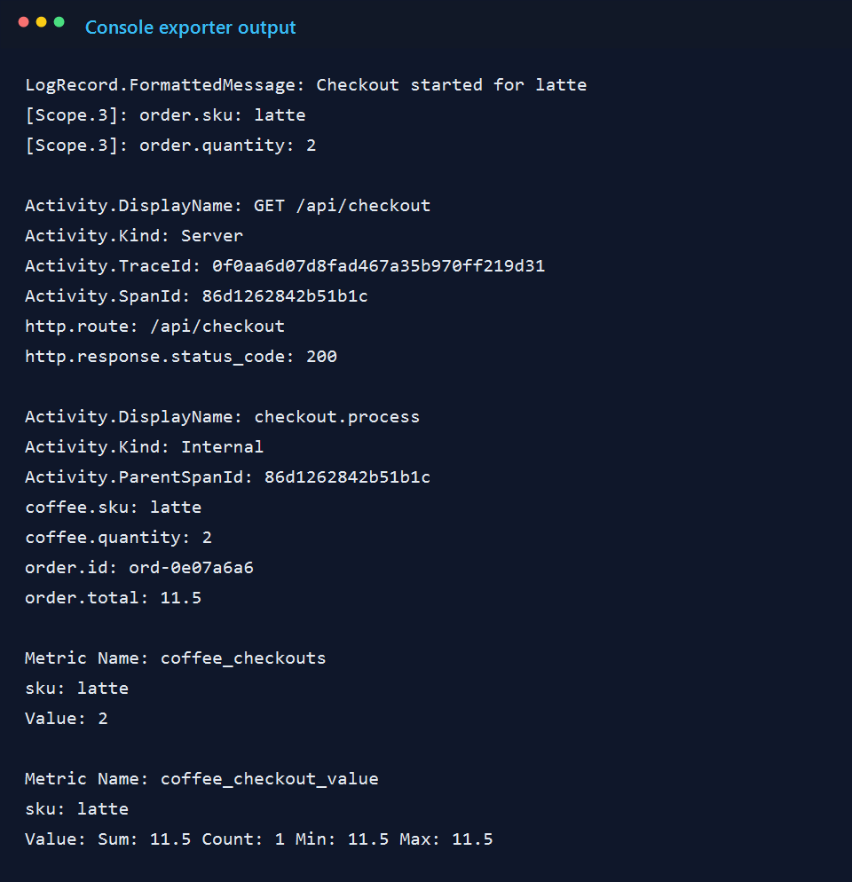

What I Learned Building a Tiny OpenTelemetry Demo in .NET
A compact coffee-shop API instrumented with OpenTelemetry, custom spans, business metrics, structured logs, and console-exported telemetry.
Read ArticleEngineering Notes
Hands-on notes on software architecture, observability, cloud systems, AI-assisted development, and the small engineering decisions that make production work easier to reason about.

A compact coffee-shop API instrumented with OpenTelemetry, custom spans, business metrics, structured logs, and console-exported telemetry.
Read Article